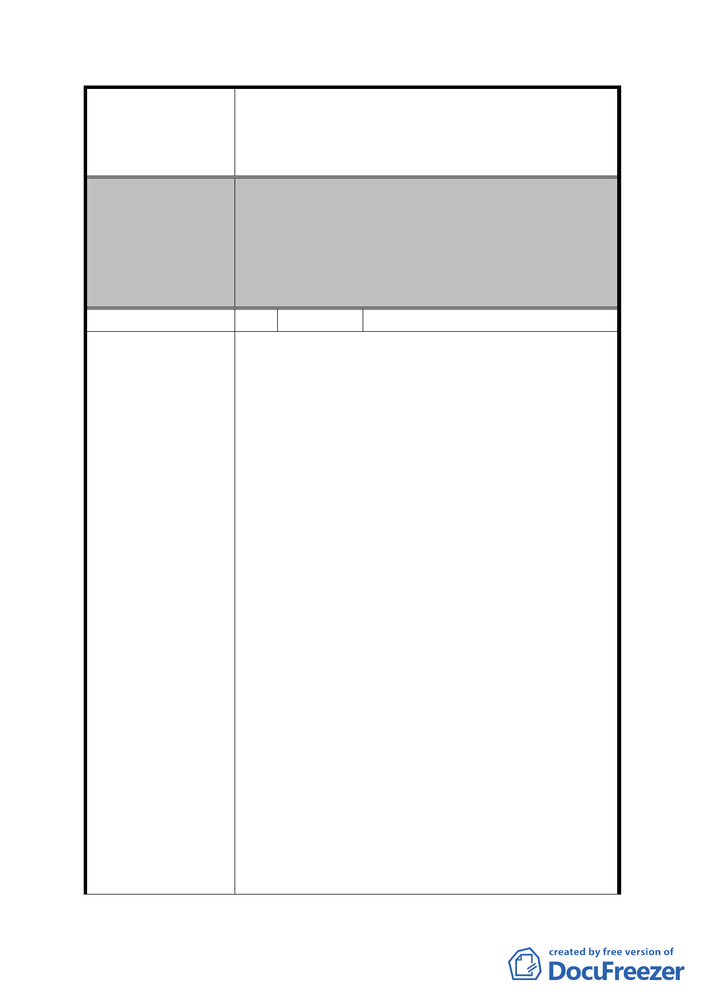

案名
委員會決議
編號
陳情理由
擬定臺北市內湖區蘆洲里附近工業區細部計畫暨變
更第 2 種工業區為科技工業區 B 區(特)、科技工業
區 B 區、道路用地、護坡用地及變更工業區(供輕工
業使用)為科技工業區 A 區(特)計畫案
市地重劃範圍部分，依發展局本次大會所提扣除範
圍內「聰明社區」與「彩虹大樓」，以及「為配合
捷運民生汐止線路線及車站佈設所指定留設公共
開放空間，變更為道路用地(供捷運設施使用)，並
增加重劃範圍」之方案予以通過，對於所附重劃負
擔之計算資料僅供參考。
12 陳情人 旺家麗國際股份有限公司
1. 本 公 司 所 有 位 於 台 北 市 內 湖 區 潭 美 段 一 小 段
654、666 地號等 2 筆土地，因市府刻正辦理都市
計 畫 變 更 事 宜 (98.11.23 府 都 規 字 第
09836517900 號公開展覽)，以致本公司無法確知
興工設廠之時程，影響本公司權益甚巨，請協調
府內相關單位召開跨單位會議解決本公司之困
境。
2. 本公司於 98 年中購入該 2 筆地號，擬興建 LED
加工事業廠房。基地西側面臨 20 米安康路 44 巷，
東側與都市計畫道路溝渠用地間，夾有 644 地號
(市府財政局所有)，本基地原已符合建築基地最
小深寬度可單獨建築，但因都市計畫街廓問題，
644 地號公有地畸零地，現本公司你申請 644 地
號公有地合併證明，惟都市發展局八科回函
（99.4.9 北市都築字第 09932178000 號函）告知
因此區正進行都市計畫變更中，雖尚未發布禁限
建規定，仍不予核發合併證明。
3. 該狀況將導致本公司建廠遙遙無期，短期內無法
增設生產線，將可預期錯失營運商機產生重大的
虧損，本公司響應政府根留台灣的政策，為了擴
大照顧更多勞工，為降低失業率，提高就業機會
盡一點棉薄之力，將公司多年的盈餘投入之外，
也以公司擴廠計畫書與銀行貸款鉅額，均投入新
廠的購地成本，現今本地號為都市計畫公告公展
期間，不能公有地合併不僅本公司無法建廠，想
要照顧更多勞工心意亦無法落實，更連帶影響到
- 38 -